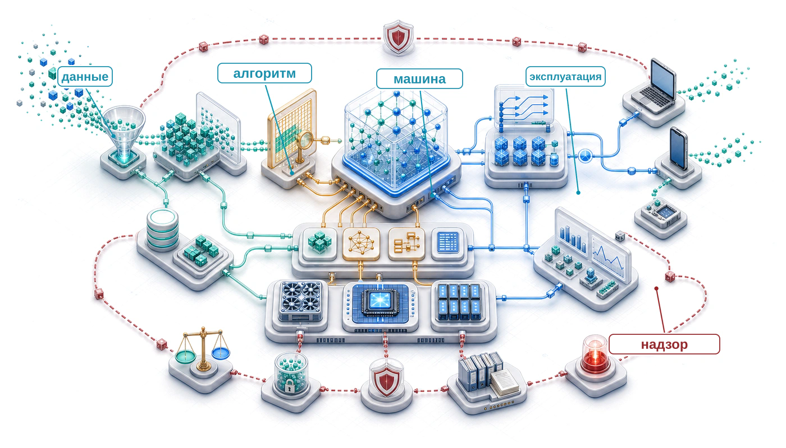
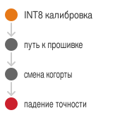
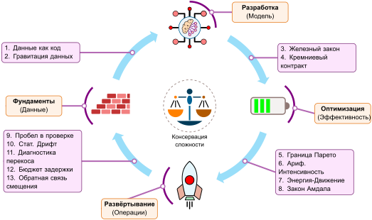
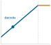
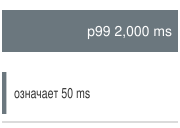
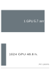

Содержание главы
Содержание
16 Заключение

Назначение
Что даёт владение полным стеком такого, чего не может дать экспертность в каком-то одном слое?
Одно производственное решение проходит через весь стек. Конвейер данных решает, какие события считаются обучающим сигналом. Этот сигнал формирует архитектуру, которая в свою очередь фиксирует занимаемый объём памяти и арифметическую интенсивность. Эти свойства ограничивают выбор аппаратного обеспечения, стратегию квантизации, задержку обслуживания, мониторинг дрейфа и обязательства по управлению. Освоенные по отдельности, каждый слой представляет собой ценный навык; освоенные вместе, они дают способность рассуждать через границы, которые ни одна отдельная специальность не видит целиком. Инженер, понимающий только сжатие, может уменьшить модель, но не может предсказать, важна ли потеря точности для контекста развёртывания. Инженер, понимающий только обслуживание, может оптимизировать задержку, но не может проследить регрессию производительности до изменения в конвейере данных тремя этапами выше по течению. Многие из самых дорогих производственных отказов возникают именно на этих границах, где каждый компонент проходит свои локальные тесты, но система в целом не достигает цели. Ценностью обладает умение анализировать систему до её построения: рассуждать о том, как будут взаимодействовать ограничения данных, алгоритма и машины (D·A·M), где возникнут узкие места и какие архитектурные обязательства окажутся необратимыми. Ограничения, управляющие этими взаимодействиями, переживают любой конкретный фреймворк, поколение аппаратуры или семейство моделей, потому что стоимость перемещения данных, скорость света и разрыв между предполагаемым и измеренным узким местом не меняются вместе с ними. Мышление системами, а не компонентами, отличает инженера, способного построить часть, от инженера, способного построить целое.
Цели обучения
- Проследить, как решения в области данных, архитектуры, сжатия, аппаратуры, обслуживания, эксплуатации и управления распространяют ограничения по ML-системе
- Применить рассуждение по модели «маяка» для диагностики узких мест в развёртываниях в облаке, на мобильных устройствах, на периферии, в рекомендательных системах и TinyML
- Синтезировать ключевые принципы ML-систем в фреймворк для рассуждений об ограничениях данных, алгоритма и машины
- Оценивать компромиссы развёртывания с помощью бюджетов задержки, перемещения памяти и энергии, дрейфа и ограничений ответственности
- Обосновать инженерный подход для новых контекстов, таких как воплощённые, составные и многоузловые системы, используя межуровневые свидетельства для определения того, где одноузловое рассуждение должно расширить свои границы
16.1 Система и есть модель
Когда пользователь задаёт вопрос голосовому ассистенту смартфона, обученные компоненты преобразуют речь в текст, интерпретируют намерение, извлекают информацию и генерируют ответ в течение секунд (Момент ИИ-систем). Отказ на любом этапе — сместившийся признак, некорректно откалиброванный диапазон квантизации или всплеск очереди — ухудшает ответ, даже если веса модели не тронуты. Система и есть модель: поведение, которое пользователь получает от сервиса машинного обучения, производится конвейером данных, обученными весами, стеком исполнения, путём обслуживания и циклом мониторинга вместе, но никогда — одними лишь весами.
Каждая глава со времени введения давала одному этапу этого запроса к голосовому ассистенту механизм и цену. Ответственный инжиниринг добавило последнее ограничение, которое накладывает книга, — обязательства системы перед людьми, которых она касается. Показано, что это ограничение ведёт себя подобно бюджетам задержки и памяти, введённым ранее, потому что его можно выполнить только там, где каждый вышележащий этап сохранил свободу его выполнить. Аудит результатов для каждой подгруппы, например, возможен только если конвейер данных сохранил метки подгрупп, которые нужны аудиту. Каждое ограничение преподавалось по одному слою за раз. Самые дорогие отказы возникают там, где слои встречаются.
Составной сценарий, расширяющий разобранную в Заблуждения и ловушки калибровочную ловушку, а не описывающий какой-то один инцидент, показывает такой отказ. Чтобы развернуть модель классификации изображений на парке мобильных устройств, команда архитектуры выбирает depthwise separable свёртки, чтобы разделить пространственную фильтрацию и проекцию каналов. Команда сжатия квантизует полученные веса и активации до INT8, чтобы они поместились в статическую оперативную память на кристалле (SRAM). Команда обслуживания укладывает сквозную задержку p99 в цель 50 ms. Каждая команда преуспела по своей локальной метрике, но через несколько недель точность упала на четыре процентных пункта на конкретных когортах прошивок и устройств.
Квантизация INT8 фиксирует диапазоны отсечения во время калибровки диапазонов квантизации, навсегда запечатывая статистическое распределение калибровочных изображений. Специфичная для прошивки процедура предобработки интерполировала изображения иначе и предъявляла квантизованной модели изменённое входное распределение на этих когортах. Ни один компонент не отказал в изоляции, и ничего не упало. Каждая команда валидировала свой компонент на стандартных входах. Задержка оценивалась сквозным образом вдоль развёрнутого пути запроса, но точность измерялась только как агрегированный скаляр на офлайн-выборке. Пользователи затронутых когорт, следовательно, получали худшие предсказания, которые мониторинг системы по построению не мог увидеть. Отслеживаемая с первого дня развёртывания точность отдельно по каждой когорте устройств и прошивок показала бы падение.

Калибровочное решение проявляется как падение точности когорты тремя этапами ниже по течению.
Большинство отказов такого рода начинаются на интерфейсе между компонентами, поэтому главная задача — тестировать интерфейсы до того, как они откажут. Традиционная программная инженерия рассматривает функциональную корректность как независимую от лежащей в основе аппаратуры и часто трактует «модель» как контрольную точку весов — единственный файл чисел с плавающей запятой. В системах машинного обучения, однако, веса часто не самая хрупкая часть, потому что статистическое поведение физически неотделимо от конвейеров, иерархий памяти и ускорителей, которые обучают, обслуживают и мониторят их. Модель, достигшая высокой точности на бенчмарке, всё равно откажет, если она получает повреждённые признаки, и модель, сходившаяся чисто во время обучения, откажет, если не уложится в бюджет задержки развёртывания.
↩︎ Тот факт, что код модели — малая доля производственной ML-системы, окружение которой — конвейеры, обслуживание и мониторинг — больше и долговечнее, установлен в От логики, заданной кодом, к поведению, заданному данными.
Отказ парка устройств стоил точности, но та же связанность между слоями определяет и то, насколько далеко метод может масштабироваться. Горький урок учит, что общие методы, масштабирующиеся с вычислениями, обгоняют закодированные вручную эвристики (Горький урок). Масштабирование такого метода поднимает перемещение данных, вычисления и накладные расходы вместе, и разные слои стека платят за каждую из этих стоимостей. Железный закон ML-систем (принцип «Железный закон ML-систем») измеряет цену этого масштабирования и стоит в центре дисциплины, потому что он разбивает время исполнения на три слагаемых — время перемещения данных, время вычислений и фиксированные накладные расходы — каждое со своим инженерным рычагом.
Построение интеллекта требует большего, чем хороший статистический алгоритм. Оно также требует соблюдения кремниевого контракта (принцип «Контракт с кремнием»), по которому каждая архитектура насыщает какой-то один аппаратный ресурс первым, и проект должен целиться в этот ресурс. Рекомендательная модель, например, заполняет память ускорителя таблицами эмбеддингов задолго до насыщения арифметики, поэтому более быстрое арифметическое устройство не делает её быстрее.
Возможности систем, следовательно, возникают из совместного проектирования (co-design) в триаде данных, алгоритма и машины (D·A·M), а не из изолированных алгоритмических прорывов. Архитектура трансформера (Vaswani и др. 2017 г.) масштабировалась в модели вроде GPT-3 и Llama 2 (Brown и др. 2020 г.; Touvron и др. 2023 г.) только потому, что решения в других слоях сделали внимание (attention) доступным по цене: IO-осознанные ядра внимания, удерживающие промежуточные оценки в памяти на кристалле, тензорные блоки низкой точности, поднимающие пиковую арифметическую скорость, и разбиение тензорного состояния между ускорителями.
↩︎ IO-осознанное разбиение внимания на тайлы, удерживающее оценки внимания в памяти на кристалле, установлено в FlashAttention: IO-ориентированная оптимизация внимания.
Контрольная точка 16.1: Системное мышление
Проверьте, что вы можете проследить зависимости системы, петли обратной связи и путь запроса через её границы.
Интеграция
Целостность
Прослеживание запроса сквозным образом обнажает связанность, стоящую за такими отказами. Каждый слой стека накладывает физические и статистические ограничения на следующий. Отбор и выбор данных ограничивают то, что видит обучающийся. Архитектуры, обучающие системы и фреймворки понижают полученные вычисления на аппаратуру. Сжатие, ускорение и бенчмаркинг двигают физические границы. Обслуживание, эксплуатация и ответственная инженерия удерживают результат в бюджетах хвостовой задержки, дрейфа и результатов по подгруппам в производстве. Поскольку эти этапы образуют тесно связанную систему, а не последовательность изолированных передач, инженерные решения никогда не остаются локализованными. Инженер, оптимизирующий один слой в изоляции, не может предсказать, как изменение распространится дальше.
Остальная часть главы делает это утверждение количественным. Сначала идут пять моделей-маяков, каждая прослежена от своего домашнего режима к рычагу, который окупился, и рычагу, который был потрачен впустую. Затем следуют тринадцать количественных принципов, перегруппированных по трём вопросам, которые введение задавало каждой ML-системе: что формирует её предсказания, что ограничивает её исполнение и какие свидетельства поддерживают её развёртывание. Двойной мандат затем измеряется на двух маяках: DLRM для заслуживающего доверия поведения и семейство GPT-2 для физической осуществимости. Те же принципы затем прогнозируют, где ограничения ужесточатся дальше — от микроконтроллеров до составных сервисов и парков устройств. Глава завершается ответственностью, следующей из построения таких систем, межграничными формами повторяющихся ошибок книги и финальным прослеживанием запроса к голосовому ассистенту через каждый слой.
16.2 Модели-маяки: распространение ограничений
Предсказание того, как инженерное изменение распространится по слоям, начинается с определения того, какой физический ресурс ограничивает рабочую нагрузку. Каждая из пяти моделей-маяков книги имеет домашний режим, определяемый ресурсом, который она насыщает первой при типичных условиях эксплуатации: ResNet-50 ограничен вычислениями, декодирование GPT-2 и Llama ограничено пропускной способностью, DLRM ограничен ёмкостью, MobileNetV2 ограничен вычислениями в своём эффективном режиме, а распознавание ключевых слов (KWS) ограничено энергией. Эффективный режим MobileNetV2 — это вся сеть, работающая на нейронном процессорном блоке (NPU) телефона, для которого она была построена, где несколько ватт покупают мало арифметики.
Каждый режим называет рычаг, который окупается. Добавление пиковой арифметической пропускной способности к декодеру большой языковой модели (LLM) с батчем один не трогает задержку токена, потому что каждый токен ждёт чтения весов из высокоскоростной памяти (HBM). Добавление пропускной способности памяти к батчевированной свёртке ResNet-50, напротив, ничего не покупает, как только её арифметическая интенсивность — число операций на перемещённый байт — оказывается справа от гребня, интенсивности, при которой потолок пропускной способности встречается с потолком вычислений. Моделирование «крыши» (Модель «крыши») превращает это сравнение в количественную верхнюю границу достижимого ускорения (Williams и др. 2009 г.). По всей книге каждый маяк вознаграждал рычаг, нацеленный на его ограничивающее слагаемое, и тратил впустую усилия, нацеленные куда угодно ещё (Таблица 1).
↩︎ Пять моделей-маяков и их диагностические режимы исполнения установлены в Маяковые модели вводят «железный закон» в практику.
| Маяк | Домашний режим | Ограничивающее слагаемое | Окупившийся рычаг | Потраченный впустую рычаг |
|---|---|---|---|---|
| ResNet-50 | Ограничен вычислениями | Вычисления, |
Батчирование, переиспользующее веса фильтров между входами; тензорная арифметика пониженной точности | Больше пропускной способности памяти, когда батчевированные свёртки стоят справа от гребня |
| GPT-2/Llama decode | Ограничен пропускной способностью | Перемещение данных, |
Батчирование между запросами; меньше байт на вес; управление кэшем ключ-значение на запрос | Больше пиковой арифметической пропускной способности или настройка ядер только под вычисления при батче один |
| DLRM | Ограничен ёмкостью | Ёмкость памяти — предусловие до применения любого слагаемого | Размещение и шардирование таблиц эмбеддингов по уровням памяти; кэширование часто читаемых строк | Более быстрая плотная арифметика для малых полносвязных слоёв |
| MobileNetV2 | Ограничен вычислениями в эффективном режиме | Вычисления в пределах энергопотребления телефона; depthwise-слои переходят к ограничению пропускной способностью | Depthwise separable свёртки, затем INT8, когда depthwise-слои стали ограничены пропускной способностью | Дальнейшие сокращения операций на слоях, уже ограниченных пропускной способностью |
| Распознавание ключевых слов (KWS) | Ограничен энергией | Энергия на инференс в милливаттном бюджете | INT8-модель менее мегабайта с тензорной ареной, спланированной на этапе сборки | Стриминг аудио в облако, передача по радио которого стоит больше энергии, чем локальный инференс |
Режим принадлежит рабочей нагрузке на машине, поэтому одна и та же модель может сменить режим, и режим надо проверять до выбора оптимизации. Обучение GPT-2 ограничено вычислениями, хотя его декодирование ограничено пропускной способностью, потому что шаг обучения переиспользует каждый вес на каждом токене батча. ResNet-50 стал ограничен входом в Обучение модели, страдая от голода из-за конвейера данных, не успевавшего кормить ускоритель.
Точность и машина тоже сдвигают режим. Арифметика INT8 удваивает пиковую скорость H100, не поднимая её пропускную способность памяти, поэтому она удваивает гребень. Слой ResNet-50, чьи активации всё ещё перемещаются при 16 битах, не сокращает байты вдвое, поэтому его интенсивность растёт меньше, чем гребень, и слой может опуститься ниже удвоенного гребня и стать ограниченным пропускной способностью (Ограничения пропускной способности памяти). MobileNetV2 меняет режим вместе с машиной. Сеть, ограниченная вычислениями на телефоне с NPU, опускается ниже гораздо более высокого гребня H100, где её depthwise-слои ждут пропускной способности памяти (Проектирование гетерогенных систем на кристалле). Рекомендательная модель крупнее DLRM, более крупный декодер, более быстрая vision-сеть или меньший распознаватель ключевых слов отличается от своего маяка масштабом, а не тем, какое слагаемое доминирует, поэтому диагноз переносится на модели, которые ещё не существуют.
Диагностика режима определяет одно решение, но развёрнутая модель является продуктом множества решений, и каждое из них ограничивает следующее. Таблица 2 прослеживает MobileNetV2 через девять фаз книги — от лимитов уровня развёртывания через архитектуру, обучение, выбор данных, сжатие, ускорение, бенчмаркинг, обслуживание моделей и эксплуатацию — и каждое инженерное решение на этом пути сужает варианты, доступные на последующих этапах.
| Фаза пути | Ракурс системы | Реализация в MobileNetV2 |
|---|---|---|
| Основы (02_system_paradigms) | Ограничения уровня развёртывания | Мобильный уровень задаёт энергопотребление порядка ватт, тепловой и аккумуляторный лимит, которые все последующие фазы должны соблюдать |
| Архитектура (Архитектуры сетей) | Алгоритмическая эффективность | Глубинно разделяемые свёртки: на 3-на-3-слое с 256 выходными каналами — в 8.7× раз меньше FLOPs и на 13.7× меньше операций, чем ResNet-50 в масштабе ImageNet |
| Обучение (Обучение модели) | Пропускная способность против задержки | Обучение при батчах с высокой пропускной способностью для модели, которая будет обслуживать одиночные запросы с низкой задержкой |
| Выбор данных (Отбор данных) | Аугментация, согласованная с ёмкостью | Более мягкая аугментация, согласованная с ограниченной ёмкостью компактной сети и проверенная против инвариантов развёртывания — вариаций устройства и освещения, — без затрат на инференс |
| Сжатие (Сжатие моделей) | Движение по фронту Парето | INT8-квантизация: FP32 занимает в 4× раза, а FP16 — в 2× раза больше памяти на значение, чем INT8, с повторной проверкой точности для каждого развёртывания |
| Ускорение (Аппаратное ускорение) | Соблюдение контракта с кремнием | Отображение ядер на мобильные нейронные процессоры (NPU) (например, Apple Neural Engine) для максимальной эффективности аппаратного исполнения |
| Бенчмаркинг (Бенчмаркинг) | Компонент против сквозной системы | Подтверждение того, что выигрыш от сжатия и ускорителя сохраняется в полном конвейере: разделение задержки ускорителя, предобработки и передачи, а также повторная проверка точности INT8 на граничных случаях, например при необычном освещении |
| Обслуживание (Обслуживание моделей) | Уважение к бюджету задержки | Ограничение |
| Эксплуатация (Эксплуатация систем машинного обучения) | Управление системной энтропией | Мониторинг дрейфа: обнаружение сдвигов распределений и отслеживание точности по когортам на разнородных популяциях устройств и условиях освещения |
Решения в одной строке ограничивают варианты в следующей. Глубинно разделяемые свёртки сокращают число операций, но глубинная фильтрация снижает межканальное переиспользование и часто оставляет эти слои ограниченными пропускной способностью памяти на мобильном оборудовании. Когда профилирование подтверждает такой режим, дальнейшее сокращение операций даёт мало, и рычагом следующего уровня становится уменьшение байтов на значение из строки сжатия. Этот рычаг окупается лишь тогда, когда строка ускорения подтверждает, что мобильный NPU исполняет INT8-операторы, а строка бенчмаркинга показывает, что выигрыш переживает предобработку и передачу. То же распространение проходит через каждый маяк, и рассуждение о нём до профилирования требует количественных принципов, которые книга накапливала часть за частью.
16.3 Тринадцать количественных принципов
Изменяет ли инженер структуру таблицы эмбеддингов в DLRM, удваивает размер батча в ResNet-50 или квантизует слой внимания с FP16 в INT8 — результат следует из физических границ, эмпирических компромиссов и эксплуатационной обратной связи, а не из догадок. Рассуждение об этих межуровневых эффектах до профилирования — задача тринадцати количественных принципов, которые книга накопила в своих четырёх частях (Таблица 3).
Тринадцать принципов не являются однотипными утверждениями. Три из них — жёсткие границы (фронт Парето, закон арифметической интенсивности и закон Амдала), два — разложения (железный закон и принцип движения энергии). Два — подобранные модели (статистический дрейф и обратная связь по смещению) и два — политики, чьи параметры задаёт продуктовое решение (разрыв верификации и бюджет задержки). Четыре — эвристики (data-as-code, гравитация данных, контракт с кремнием и перекос обучения-обслуживания). Контракт с кремнием — эвристика, потому что он предсказывает, какой ресурс архитектура исчерпает первой; это предсказание затем проверяется границей арифметической интенсивности. Фронт Парето, напротив, — граница, потому что ни одна допустимая конфигурация не лежит за его пределами. Каждый блок принципа на страницах частей указывает свой тип, и каждый принцип надёжен только в рамках своих заявленных допущений.
| # | Принцип | Часть | Ключевое уравнение/утверждение | Что он предсказывает |
|---|---|---|---|---|
| «Принцип data-as-code» | Принцип data-as-code | I: Основы | Learned behavior |
Данные меняют поведение; важны и другие входы |
| «Принцип гравитации данных» | Принцип гравитации данных | I: Основы | Переносите вычисления к данным, когда повторные затраты на передачу превышают затраты на размещение | Зависит от объёма, переиспользования, сети и мобильности вычислений |
| «Железный закон ML-систем» | Железный закон ML-систем | II: Разработка | Множители D·A·M перемножаются; этапы складываются или перекрываются | |
| «Контракт с кремнием» | Контракт с кремнием | II: Разработка | Каждая архитектура первой исчерпывает один ресурс (вычисления, пропускная способность или ёмкость) | Конфигурация должна целиться в ресурс, исчерпываемый первым |
| «Фронт Парето» | Фронт Парето | III: Оптимизация | Не существует допустимой точки, которая не хуже по каждому критерию и строго лучше хотя бы по одному | Вдоль фронта улучшение одного критерия ухудшает другой |
| «Закон арифметической интенсивности» | Закон арифметической интенсивности | III: Оптимизация | Больше вычислений не поднимает потолок, заданный пропускной способностью | |
| «Принцип движения энергии» | Принцип движения энергии | III: Оптимизация | Полная энергия зависит от перемещённых байтов, операций и стоимости каждого события | |
| «Закон Амдала» | Закон Амдала | III: Оптимизация | При фиксированной работе последовательная доля ограничивает выигрыш от параллелизма | |
| «Разрыв верификации» | Разрыв верификации | IV: Развёртывание | Вероятность успеха на популяции развёртывания должна достигать заданной цели при указанном допуске на ошибку задачи | Укажите дистанцию, допуск, популяцию и требуемую вероятность успеха |
| «Диагностика статистического дрейфа» | Диагностика статистического дрейфа | IV: Развёртывание | Локальная подгонка; дрейф не обязан снижать качество | |
| «Диагностика перекоса обучения-обслуживания» | Диагностика перекоса обучения-обслуживания | IV: Развёртывание | Несовпадение выходов сигнализирует о риске, а не о потере точности | |
| «Принцип бюджета задержки» | Принцип бюджета задержки | IV: Развёртывание | Продуктовый SLO задаёт |
|
| «Модель обратной связи по смещению» | Модель обратной связи по смещению | IV: Развёртывание | Обратная связь может усиливать вред; измеряйте и вмешивайтесь |
Путеводитель по нотации для Таблица 3: Строка разрыва верификации сформулирована словами; её формальная версия на странице части (принцип «Разрыв верификации») использует метрику расстояния, специфичную для задачи
Тринадцать принципов — не независимые аксиомы. Эвристика сохранения сложности1, введённая в Части I, связывает их в единую структуру, потому что сложность, вытесненная решением, обычно оседает под действием другого принципа. Эвристика утверждает, что упрощение одной части системы, как правило, переносит сложность в другую её часть, а не устраняет её. В Части III сжатие моделей продемонстрировало это вытеснение в масштабе одной модели: прореживание жертвует ёмкостью, квантизация — точностью, дистилляция — вычислениями на обучение. В масштабе всей системы дисциплина та же. После любого локального упрощения прослеживайте, куда мигрировала вытесненная сложность. Эвристика служит диагностическим инструментом, а не физическим законом сохранения. Случайная сложность — работа, которую задача никогда не требовала, например избыточная модель, — может быть устранена полностью продуманной конструкцией. Системная сложность, которую требует сама задача, чаще смещается в другое место, например квантизация модели переносит её в валидацию.
Страницы частей вводили принципы в том порядке, в котором они были нужны книге. Прочитанные вместе, они полезнее сортируются по трём вопросам, которые введение задавало каждой ML-системе (Итоги): что формирует её предсказания, что ограничивает её исполнение и какие доказательства поддерживают её развёртывание. Три следующие группировки сохраняют номер каждого принципа, поэтому любой принцип по-прежнему можно найти на странице своей части. Лишь два принципа перемещаются от остальных принципов своей части. Гравитация данных (2) присоединяется к принципам исполнения, потому что решает, где выполняются вычисления, а обратная связь по смещению (13) — к data-as-code, потому что меняет данные, по которым учится следующая модель.
Что формирует предсказания (принципы 1 и 13)
Единственное изменение фильтра очистки данных может изменить предсказания модели, не затронув ни строки кода модели, а автоматизированная кредитная модель может выполнять все цели по пропускной способности и сходимости, систематически наращивая диспропорции против недообслуживаемых групп от цикла переобучения к циклу. Принцип data-as-code («Принцип data-as-code») объясняет первое поведение: поскольку обучающий набор диктует выученное поведение, изменение курирования данных — это поведенческое изменение, требующее столь же строгого версионирования, ревью кода и регрессионного тестирования, какие применяются к исходному коду.
Модель обратной связи по смещению (принцип «Модель обратной связи по смещению») распространяет эту зависимость за пределы запуска, потому что предсказания развёрнутой модели формируют данные, по которым обучается её преемница. Она трактует диспропорцию как величину, нарастающую от цикла к циклу переобучения с подобранной скоростью, превращая справедливость в вопрос устойчивости контура развёртывания, который должен перехватываться дезагрегированным мониторингом, а не обнаруживаться в агрегированной точности. Когда данные, формирующие предсказания, зафиксированы, следующий вопрос — какие физические границы управляют работой обучения и исполнения модели на этих данных.
↩︎ Модель обратной связи по смещению, с подобранным коэффициентом, проецирующим, когда диспропорция, прошедшая порог релиза, его превысит, установлена в Эксплуатация: справедливость как устойчивость контура.
Что ограничивает исполнение (принципы 2–8)
Перемещение набора данных петабайтного масштаба между облачными регионами стоит дней времени передачи и существенных расходов на egress, что легко оправдывает перенос вычислений к данным, а не наоборот. Принцип гравитации данных («Принцип гравитации данных») формализует это ограничение размещения: где размещается объём данных, там вычисления могут исполняться по приемлемой цене.
↩︎ Время передачи и стоимость egress, превращающие большой набор данных в гравитационный центр архитектуры, установлены в Гравитация данных.
Маячные модели несут то же ограничение размещения в исполнение. В DLRM таблицы эмбеддингов, перерастающие память одного ускорителя, шардятся между ускорителями и уровнями памяти, и расположение каждого шарда решает, сколько поисков должно пересекать более медленный канал, поэтому система исполнения проектируется вокруг того, где физически размещаются параметры. Размещение «вычисления к данным» повторяется во всех средах развёртывания именно потому, что перемещение больших наборов данных с низким переиспользованием насыщает интерконнекты.
Когда размещение зафиксировало, где находятся данные, железный закон (принцип «Железный закон ML-систем») и контракт с кремнием (принцип «Контракт с кремнием») определяют, насколько эффективно работа там исполняется. Мультипликативная форма D·A·M железного закона связывает масштаб данных (
↪ Диагностика узких мест, сопоставляющая каждый ограничивающий термин «железного закона» с работающими и бесполезными оптимизациями, собрана для справки в Воздействие на ограничивающий член.
Оставшиеся четыре принципа второго вопроса опираются друг на друга. Граница Парето (принцип «Фронт Парето») выделяет те решения, которые ни одна альтернатива не превосходит сразу по всем целевым показателям, так что улучшение одного показателя вдоль этой границы требует компромисса с другим в рамках того же множества допустимых решений. Закон арифметической интенсивности (принцип «Закон арифметической интенсивности») затем диагностирует для каждого кандидата на этой границе, что именно ограничивает скорость его ядер на целевой машине — вычисления или пропускная способность.
Перемещение данных через память стоит энергии, а не только времени. Принцип перемещения энергии (принцип «Принцип движения энергии») учитывает эту стоимость, сочетая удельные затраты на событие с количеством событий. При эталонных энергетических константах одно обращение к DRAM стоит примерно 173–582× по сравнению с одной арифметической операцией. Отношение DRAM к FP32 из главы об аппаратном ускорении (Аппаратное ускорение) находится на нижнем конце этого диапазона, а более дешёвая операция FP16 задаёт верхний конец. Какая из этих стоимостей доминирует во всей рабочей нагрузке, зависит ещё и от того, сколько событий каждого типа происходит. Даже после настройки трафика памяти и выполнения ядер закон Амдала (принцип «Закон Амдала») устанавливает потолок любого прироста параллелизма, объясняя, почему загрузка данных и предобработка могут стать узкими местами в высоко оптимизированных системах.
↩︎ Граница между вычислительной и пропускной ограниченностью и аппаратный баланс (
MobileNetV2 затрагивает все четыре. Глубинно разделяемые свёртки сдвигают границу Парето, покупая многократно меньшее число операций ценой небольшой потери точности (Sandler и др. 2018 г.). Квантизация INT8 использует закон арифметической интенсивности, повышая арифметическую интенсивность за счёт сокращения трафика памяти (Jacob и др. 2018 г.). Экономия энергии следует принципу перемещения энергии, поскольку перемещается меньше байтов, — при условии, что NPU выполняет операторы INT8 нативно; а закон Амдала ограничивает сквозное ускорение, пока предобработка на стороне хоста остаётся неускоренной. Рабочие нагрузки на микроконтроллерах, такие как KWS, сжимают эти компромиссы ещё сильнее, работая в памяти объёмом менее мегабайта, где почти нет места для устранимых накладных расходов. Однако выполнение всех ограничений на стенде не гарантирует, что модель будет вести себя надёжно под реальным трафиком.
↩︎ Сжатие перемещает модель вдоль границы «точность—эффективность», как установлено в Граница «качество — эффективность».
Какие свидетельства подтверждают развёртывание (принципы 9–12)
Система, достигающая целевых показателей пропускной способности, памяти и точности на стенде, всё ещё может незаметно отказать в эксплуатации, когда реальные входные данные или конвейеры обслуживания расходятся с тестовым стендом. Разрыв верификации (принцип «Разрыв верификации») обозначает дистанцию между тем, что могут показать конечные тесты, и корректностью на каждом возможном будущем входе. Поскольку этот разрыв никогда не закрывается, принцип вместо этого задаёт требуемую вероятность успеха на заявленной развёртываемой совокупности и допуске ошибок, а конечное тестирование оценивает, удовлетворяет ли система этому требованию на заявленном уровне статистической уверенности. Когда модель начинает обслуживать реальный трафик, диагностика статистического дрейфа (принцип «Диагностика статистического дрейфа») обнаруживает изменение этой развёртываемой совокупности, а размеченные результаты измеряют, сколько в точности стоит этот сдвиг. Диагностика расхождения обучения и обслуживания (принцип «Диагностика перекоса обучения-обслуживания») выявляет внутреннее расхождение, когда пути обучения и обслуживания вычисляют одни и те же признаки по-разному. Бюджет задержки (принцип «Принцип бюджета задержки») удерживает весь путь запроса в пределах хвостовой квантили, выбранной продуктом.
↩︎ Повторное использование параметров преобразований времени обучения во время обслуживания — императив согласованности, предотвращающий расхождение, — установлен в Согласованность обучения и обслуживания.
Инфраструктура мониторинга, обнаружение дрейфа, хранилища признаков (feature store) и дезагрегированные метрики подгрупп существуют для того, чтобы делать эти принципы измеримыми и запускать корректирующие действия. Рекомендательная система с высокой офлайн-точностью всё равно требует проверок на согласованность, когда расхождение обучения и обслуживания искажает конвейеры признаков (принцип «Диагностика перекоса обучения-обслуживания»), и аудита результатов, когда поведение пользователей сдвигается сезонно (принцип «Диагностика статистического дрейфа»).
↩︎ Инфраструктура мониторинга и количественная оценка дрейфа, вскрывающие эти незаметные отказы, установлены в Мониторинг в промышленной эксплуатации.
Интегрированная структура
Хотя три вопроса группируют тринадцать принципов по назначению, одно инженерное решение активирует принципы из разных групп одновременно. Квантизация модели с FP16 до INT8 прокладывает путь по границе Парето (принцип «Фронт Парето»), обменивая числовую точность на трафик памяти, и её последствия расходятся по всему стеку. Квантизация меняет «кремниевый контракт» модели (принцип «Контракт с кремнием»), сдвигает её рабочую точку на кривой арифметической интенсивности (принцип «Закон арифметической интенсивности») и преобразует её энергетический профиль (принцип «Принцип движения энергии»). При развёртывании бюджет задержки (принцип «Принцип бюджета задержки») определяет, достигает ли полученное ускорение целевого уровня обслуживания (SLO), а разрыв верификации (принцип «Разрыв верификации») требует проверить, что скомпилированный граф обслуживания сохраняет эмпирическую точность, измеренную при тестировании сжатия.
Начальный инцидент с флотом ускользнул именно на этом шаге верификации. Тестирование сжатия приняло квантизованную модель на изображениях из конвейера оценки, тогда как путь прошивки представлял другую совокупность данных. Диагностика расхождения обучения и обслуживания (принцип «Диагностика перекоса обучения-обслуживания»), сравнивающая выходы модели из двух путей предобработки на одних и тех же зафиксированных входах, — это то измерение, которое выявило бы несоответствие до того, как это сделала затронутая когорта. В этом сравнении конвейер оценки, породивший калибровочные изображения, играет роль, которую диагностика отводит пути обучения, а путь прошивки — роль пути обслуживания. Разрыв верификации называет причину, по которой отказ ускользнул; диагностика расхождения называет способ его поймать.
Эта цепочка затронула семь из тринадцати принципов, и иное решение затронуло бы иной набор. Если бы та же модель была вынесена с устройства в облачную конечную точку, вошло бы размещение данных (принцип «Принцип гравитации данных»), потому что каждое входное изображение пересекало бы сеть. Если бы предобработка осталась на хостовом CPU, пока NPU выполнял более быстрые ядра INT8, закон Амдала (принцип «Закон Амдала») ограничил бы, какую долю этого ускорения увидит путь запроса. Принципы активируются по очереди по мере движения решения от представления модели к аппаратному исполнению и к производственной валидации, поэтому предложение по развёртыванию можно проверить по тем же принципам ещё до того, как кто-либо напишет код.
Контрольная точка 16.2: Применение принципов
Коллега предлагает квантизовать вашу модель с FP16 до INT8, чтобы снизить затраты на обслуживание.
Trace the principles
В порядке частей из Таблица 3 принципы образуют цикл, а не конвейер (Рисунок 1) — свойство, которое скрывает группировка по трём вопросам. Принципы развёртывания (9–13) превращают телеметрию среды исполнения в свидетельства, которые возвращают работу к основаниям данных — через такие меры реагирования, как канареечные откаты, эвристики отката (fallback), пополнение наборов данных, переобучение модели или перенастройка ядер, — так что каждый производственный урок становится исходным условием следующего прохода проектирования. Обратная связь по смещению (13) принадлежит им же, поскольку её фактор обратной связи может быть подогнан только по циклам переобучения после того, как модель начала обслуживать трафик. Эвристика сохранения сложности находится в центре этого цикла, потому что каждый проход вокруг неё спрашивает, куда переместилась сложность, вытесненная предыдущим решением.

Диагностическая структура собрана для справки в Одномашинные основы, а эталонные константы для прикидочных расчётов приведены в Системные допущения. Прогон предложения по квантизации через затрагиваемые им принципы проверяет одно вмешательство, но в эксплуатации система должна одновременно выполнять два более широких обязательства — сохранять выученное поведение заслуживающим доверия с течением времени и доставлять его в пределах физических и экономических ограничений, — и те же принципы измеряют и то, и другое.
16.4 Двойной императив: ещё раз
Рекомендательная модель, хорошо ранжирующая в день запуска, полгода спустя может обслуживать аудиторию, которую сформировали её же собственные ранжирования, — на аппаратуре, где стоимость одного запроса решает, выживет ли сервис. Во введении эта пара требований была названа двойным императивом, и тринадцать принципов делают обе его половины измеримыми сквозным образом на «маяках» этой книги.
↩︎ Двойной императив — надёжное обученное поведение, доставляемое в пределах доступного времени, памяти, энергии и стоимости — введён в Момент ИИ-систем.
Надёжное обученное поведение
DLRM несёт первую половину, потому что рекомендательный сервис может пройти офлайн-оценку при запуске и всё же утратить надёжность в продакшене. При запуске разрыв верификации (принцип «Разрыв верификации») ограничивает то, что конечное тестирование реально установило на оценочной популяции. Когда начинает поступать живой трафик, перекос обучение—обслуживание (principle «Диагностика перекоса обучения-обслуживания») может атаковать модель изнутри, если онлайн-поиск эмбеддингов и офлайн-конвейер обучения вычисляют один признак по-разному. Со временем диагностический признак статистического дрейфа (принцип «Диагностика статистического дрейфа») применяет локальную аппроксимацию уравнения деградации (Уравнение (1)) к продакшен-телеметрии, используя расхождение по признакам пользователей и объектов как ранний сигнал, а отложенные клики и конверсии — как подтверждение. Между циклами переобучения модель обратной связи смещения (принцип «Модель обратной связи по смещению») замыкает цикл: объекты и авторы, получившие показы, генерируют данные вовлечённости, которые приносят им новые показы, и возникающий дисбаланс может усиливаться или ослабевать в зависимости от подобранного коэффициента
Физическая реализуемость
Вторую половину несёт GPT-2, и его семейство в крупном масштабе показывает эту физику наиболее отчётливо. Llama 2 70B — трансформер того же дизайна с декодером в одиночном экземпляре и примерно с 47× параметров — столько же, сколько у релиза GPT-2 с 1.5-billion параметрами. Большая масштабность не сдвигает декод с батчем единичной размерности с пропускной-способностной стороны точки «хребта», потому что каждый генерируемый токен по-прежнему один раз читает каждый вес. Обслуживание одного токена Llama 2 70B на двух H100 делает эту стоимость конкретной.
↩︎ Интенсивность декода с батчем единичной размерности — около 1 FLOP/байт в FP16, поскольку каждое чтение веса обслуживает одно умножение с накоплением — установлена в Авторегрессионное декодирование.
В FP16 модель с 70-billion параметрами занимает около 140 GB под веса, и каждый токен стоит около 140 GFLOP — два FLOP на параметр. При равномерном шардировании на двух NVIDIA H100 с суммарной пропускной способностью 6.70 TB/s и суммарным пиком FP16 1978 TFLOP/s (NVIDIA H100 (эталонная машина)) железный закон (принцип «Железный закон ML-систем») даёт нижнюю границу переноса из памяти
Закон арифметической интенсивности (принцип «Закон арифметической интенсивности») объясняет этот зазор в 295.2×. Деление времени работы с памятью (

В этой нижнеграничной модели декода с батчем единичной размерности декод лежит левее хребта модели «крыши», в режиме, ограниченном пропускной способностью.
Оценка превращает физическую границу в диагноз. Принцип кремниевого контракта (принцип «Контракт с кремнием») обнажает архитектурное следствие. Ускорители выделяются и покупаются по пиковому арифметическому throughput (пропускной способности), однако эта рабочая нагрузка сначала насыщает пропускную способность памяти, так что достижимая скорость генерации токенов определяется байтами в секунду, переносимыми из памяти, а не пиковыми FLOP/с. Принцип движения энергии («Принцип движения энергии») указывает на тот же трафик весов. Обращение к DRAM стоит на порядки больше энергии, чем арифметическая операция, — в соотношении, указанном вместе с этим принципом в Глава 16.3. Эта рабочая нагрузка выполняет лишь около одной операции на считанный байт, так что перемещение весов доминирует в энергетических затратах каждого токена. Энергетическое соотношение сравнивает одно обращение с одной операцией. Обращение переносит несколько байт, поэтому точная стоимость в пересчёте на байт зависит от того, сколько байт оно переносит, и эту цифру устанавливает телеметрия оборудования.
↩︎ Энергетическая лестница от регистров до внешней памяти, задающая стоимость за обращение при перемещении веса, установлена в Специализация аппаратного обеспечения.
Из двух рычагов, способных снизить границу памяти, формирование батчей упирается в предел на уровне сервиса, где бюджет задержки (принцип «Принцип бюджета задержки») ограничивает, как далеко можно зайти. Батч побольше повышает пропускную способность, но каждый принятый в него запрос может ждать за длинными промптами и генерациями других запросов, и эти ожидания накапливаются в хвосте распределения задержек. Релевантная задержка теперь включает обработку промпта и ожидание запроса, а не только декодирование токенов. Рассмотрим иллюстративный чат-эндпоинт LLM, у которого среднее время до первого токена составляет 50 ms, но p99, обусловленный длинными промптами и ожиданием в очереди за длинными генерациями, достигает 2,000 ms — хвост в 40× больше среднего (иллюстрация на полях). Оба значения — предположения сценария, а не выходы модели массового обслуживания. Фактический хвост зависит от смеси запросов и политики планирования и должен быть измерен; общая значимость хвостовой задержки установлена в Dean и Barroso (2013 г.). Продукт обязуется перед хвостовой квантилью, так что формирование батчей, улучшающее пропускную способность, должно останавливаться там, где эта квантиль выходит за свой дедлайн.

Средняя задержка прячет хвост; выбранная хвостовая квантиль определяет SLO.
↩︎ Модель массового обслуживания, связывающая утилизацию с хвостовой задержкой, и предположения о времени обслуживания, при которых её оценка p99 выполняется, установлены в Хвостовая задержка.
Обе линии рассуждения опираются на разные принципы, но разделяют одну дисциплину: назвать лимитирующий член, измерить его и заложить в бюджет. Масштабирование продолжает работать лишь при условии, что система может себе его позволить и её результатам можно доверять; следующая проверка этой дисциплины — способны ли те же принципы предсказать, где ограничения ужесточатся в новых видах развёртывания.
16.5 Направления будущего
Когда МЛ-системы выходят за пределы единственной модели в дата-центре, те же физические и статистические ограничения действуют с меньшими запасами. Беспилотный автомобиль, проезжающий незнакомый перекрёсток, не может ждать облачного кругового пути, пока его сенсорные потоки конкурируют с моделью за локальную шину, а клинический ассистент не может позволить себе некалиброванный диагностический ответ при сдвиге распределения. Три ближайших давления определяют, какое из этих ограничений будет доминировать дальше: развёртывание на контрастных аппаратных уровнях, устойчивость к сдвигу распределения и состязательным условиям (включая намеренно созданные входы (Goodfellow и др. 2015 г.)) и общественные приложения, чьи отказы влекут публичные последствия. Четвёртый горизонт — системы, компонующие несколько моделей, инструментов и верификаторов или масштабирующиеся за пределы одной машины, — продолжает ту же логику, а не заменяет её.
Применение принципов к новым контекстам развёртывания
Перенос рабочей нагрузки из серверной стойки дата-центра на мобильный телефон или сенсор с батарейным питанием отнимает порядки величин в ёмкости памяти и энергетическом бюджете, одновременно ужесточая дедлайны задержки. Этот диапазон проверяет, способен ли единый количественный каркас объяснять системы в контрастных ресурсных режимах. Облако предлагает изобилие энергии и централизованное оборудование; периферийные и мобильные устройства работают в жёстких бюджетах задержки и батареи; TinyML и встраиваемые системы сжимают ту же проектную задачу в килобайты и милливатты.
↩︎ Четыре парадигмы развёртывания и физические ограничения по энергии, задержке и памяти, их разделяющие, установлены в Четыре режима развёртывания на девяти порядках величины.
В облачном режиме центральное решение — как превратить изобилие аппаратуры в полезную пропускную способность: для ResNet-50 это удержание батчевых ядер у вычислительного потолка, для DLRM — размещение таблиц эмбеддингов, превышающих память одного ускорителя. К малому концу спектра прогноз несут «маяки» MobileNetV2 и распознавания ключевых слов.
Мобильные и периферийные устройства, дом «маяка» MobileNetV2, работают при ограничениях по энергии, нагреву и памяти куда более жёстких, чем облачные, поэтому они требуют совместного проектирования аппаратуры и ПО. Ускоритель класса H100 обладает примерно в 10× большей ёмкостью памяти и примерно в 140× большим лимитом энергопотребления, чем референсное мобильное устройство, и эффективные сетевые архитектуры в сочетании со сжатием моделей позволяют уложиться в эти пределы. Развёртывание на периферии обязательно, когда задержка, приватность, прерывистая связность или исходящий трафик делают централизованный облачный инференс неосуществимым. На этих устройствах эффективность решает, запустится ли модель вообще.
↩︎ Пределы по занимаемому объёму памяти и энергопотреблению для отдельного устройства, разделяющие мобильный уровень и ускоритель для дата-центра, установлены в Сопоставление рабочих нагрузок и аппаратного обеспечения.
На противоположном крае спектра — TinyML и встраиваемые системы, область маякового примера с распознаванием ключевых слов, — они работают в рамках бюджетов в килобайты SRAM, лимитов мощности в милливатты и многолетних циклов эксплуатации. В этих рамках микроконтроллер не может позволить себе полностью динамическую среду исполнения или выделение памяти из кучи во время инференса, поэтому решения, которые более крупная система принимает во время выполнения, переносятся на этап сборки (Статические среды исполнения для микроконтроллеров). Список операторов, ядра, слинкованные в бинарный файл, и план памяти для фиксированной тензорной арены — всё это определяется до того, как устройство отгружается, поэтому пиковое использование SRAM известно заранее. В обоих случаях — и на мобильном, и на встраиваемом уровнях — эти жёсткие аппаратные рамки мотивировали появление компактных семейств архитектур, таких как MobileNets (Howard и др. 2017 г.; Sandler и др. 2018 г.) и EfficientNets (Tan и Le 2019 г.), показывая, как аппаратные ограничения определяют алгоритмический дизайн.
↩︎ Физические пределы по памяти и задержке, требующие сжатия при развёртывании на микроконтроллерах и периферийных устройствах, установлены в Бюджеты развёртывания и сквозные примеры.
Смежный рубеж — воплощённый ИИ (embodied AI) и робототехника, где модели исполняются внутри замкнутых циклов сенсомоторного управления. В этом режиме директивный срок
Генеративный ИИ нагружает все эти режимы одновременно. Авторегрессионное декодирование семейства GPT-2/Llama при низком батче ограничено пропускной способностью, как показала оценка по токенам, и каждое из мер в обслуживаемом ответе атакует лимитирующий член по-своему. Формирование батчей повышает повторное использование весов. Спекулятивное декодирование тратит избыточные вычисления на небольшую черновую модель, которая предлагает несколько токенов, после чего целевая модель проверяет их все за один проход, так что каждый проход по весам целевой модели может дать более одного токена. Prefill — фаза, обрабатывающая весь промпт параллельно до начала декодирования, — переиспользует каждый вес для каждого токена промпта, поэтому достаточно длинный промпт смещает работу к потолку по вычислениям, и одна и та же модель пересекает режимы внутри одного запроса.
↩︎ Непрерывное формирование батчей, управление кэшем ключей-значений и спекулятивное декодирование при обслуживании языковых моделей установлены в Обслуживание LLM.
Одни и те же физические пределы действуют во всех этих парадигмах, тогда как подобранные статистические модели и политики SLO остаются специфичными для конкретного развёртывания, поэтому каждый контекст требует применять принципы вместе, а не как изолированные оптимизации. Каждое новое усложнение добавляет и новые поверхности отказов, что делает надёжность на каждом уровне ограничивающим фактором на следующем рубеже.
Построение надёжных ИИ-систем
На этих поверхностях отказов система машинного обучения может уверенно и неверно дать ответ, в то время как обычные проверки работоспособности инфраструктуры остаются зелёными, позволяя тихим отказам оставаться необнаруженными неделями. Точность может деградировать без какого-либо изменения кода — при смещении распределения входных данных, когда редкие граничные случаи выходят за пределы охвата обучающих данных или когда состязательные входы (небольшие намеренно созданные возмущения, при которых вход для человека выглядит неизменным) перебрасывают предсказание через хрупкую границу решения.
Поскольку предзапусковая оценка характеризует поведение лишь на конечной выборке заданной популяции, она не может исключить все будущие граничные случаи или состязательные возмущения до развёртывания. В продакшене сигналы статистического дрейфа показывают, когда сместилась входная популяция, а размеченные результаты определяют, действительно ли пострадало качество. Вместе эти ограничения делают непрерывный мониторинг, политики отката и периодическую повторную валидацию обязательными требованиями к дизайну — без предположения, что каждое смещение распределения вызывает деградацию. Операционный вопрос состоит в том, будет ли отказ обнаружен и диагностирован до того, как его воздействие распространится.
Поэтому надёжность требует проектировать систему с учётом плавной деградации, а не только предотвращения отказов. На уровне отдельной системы эта дисциплина проявляется в резервных путях, порогах неопределённости, отправляющих низкоуверенные предсказания по этим путям, политиках отката для конкретных версий и хуках мониторинга, причём откат резервируется для неудачного релиза, а не для внешнего дрейфа. В большем масштабе та же логика распространяется на запасное оборудование и ансамбли по-разному построенных моделей. По мере того как ИИ-системы принимают всё более автономные роли в здравоохранении, транспорте и финансах, растёт и цена необнаруженного отказа.
↩︎ Процедуры реагирования на инциденты, включая выбор между откатом, резервным путём и снижением трафика, установлены в Реагирование на инциденты в ML-системах.
ИИ на благо общества
Надёжные системы — это предпосылка для развёртывания ИИ в областях, где технические отказы имеют публичные последствия. Кейс скрининга диабетической ретинопатии из 03_ml_lifecycle показывает почему. Модель, достигающая уровня эксперта на качественных изображениях со стандартизированных исследовательских камер, может дать сбой на размытых, плохо освещённых снимках со старых клинических камер — не потому, что алгоритм неверен, а потому, что развёрнутая популяция вышла за пределы обучающего диапазона. В терминах разрыва верификации (принцип «Разрыв верификации») запускная оценка сертифицировала модель на неправильной популяции. Каждая общественная область нагружает свой принцип.
↩︎ Разрыв между лабораторией и полем в кейсе скрининга диабетической ретинопатии, где полевые изображения выходят за пределы обучающего распределения, установлен в Разрыв между лабораторными и полевыми данными.
Нагрузки научных открытий, такие как предсказание структуры белков, могут требовать устойчивой пропускной способности при обучении или инференсе, поэтому железный закон (принцип «Железный закон ML-систем») и кремниевый контракт (принцип «Контракт с кремнием») решают, какую часть пространства поиска сможет исследовать фиксированный вычислительный бюджет. Здравоохранение нагружает скорее принципы развёртывания. Калиброванная неопределённость, внешняя валидация на каждой новой площадке, клинический контроль и непрерывный мониторинг становятся требованиями безопасности, поскольку диагностическая модель, обученная на популяции одной больницы, может деградировать в другой — с иным демографическим составом, распространённостью заболеваний или оборудованием для снимков. Персонализированное образование нагружает управление данными и принцип «данные как код» («Принцип data-as-code»), поскольку записи о взаимодействиях студентов, движущие персонализацией, одновременно чувствительны и по сути являются той программой, из которой учится модель. Климатическая модель, выдающая уверенные, но некалиброванные проекции, переносит ту же проблему верификации в политику, где чрезмерно уверенный прогноз может направить решения, медленные и дорогие в отмене.
В каждой из этих областей таксономия D·A·M, тринадцать принципов и анализ «крыши» (roofline) дают системные вопросы, но приемлемые ответы приходят из предметных свидетельств — клинических исследований, измерений образовательных результатов, физической валидации, — которые не даёт никакой универсальный системный анализ. Эти приложения разделяют также свойство, делающее их ограничения управляемыми: границы их задач фиксированы заранее. Диагностическая модель классифицирует внутри заданного набора меток, а предсказатель структуры отвечает на определённый вид запросов. Следующее испытание снимает эту границу.
Композиция систем как испытание
Самое амбициозное испытание этих принципов — система, границы задач которой не фиксированы заранее. Универсальный ассистент или ML-сервис из нескольких компонентов может провести один запрос через цепочку специализированных этапов: модель-планировщик решает, какие шаги предпринять, извлечение (retrieval) достаёт релевантные документы из индекса, пока исполнение инструментов вызывает внешние программы вроде поисковика или калькулятора, генератор синтезирует ответ, а верификатор проверяет его по правилам или с помощью второй модели. Управляющая задача здесь — системная инженерия не меньше, чем дизайн алгоритмов, поскольку окружающая система должна ограничивать задержку, надёжность, стоимость, безопасность и наблюдаемость по мере разветвления работы по компонентам.
Композиция систем нагружает четыре принципа одновременно по-новому. По мере разветвления работы по извлечению, планированию, исполнению инструментов, генерации и верификации железный закон должен бюджетировать вычисления и перемещение данных каждого этапа. Кремниевый контракт фрагментируется, поскольку каждый этап насыщает другой ресурс. Поиск по индексу опирается на ёмкость и пропускную способность памяти, генерация — на трафик весов при декодировании, а вызов инструмента — на сетевые круговые задержки, так что ни один ускоритель не подходит для всего запроса. Балансировка этих разнородных этапов расширяет границу Парето с двух-трёх метрик, вроде точности, задержки и памяти, до большей поверхности, включающей также безопасность, справедливость, фактичность, приватность и стоимость. Статистический дрейф теперь угрожает извлечённым документам, ответам инструментов и промежуточным решениям, а не только финальному выводу.
Системная стоимость видна в одном запросе. Если ассистент разветвляется на извлечение, планировщик, два инструмента, генератор и верификатор, его реализованная задержка следует критическому пути запроса. Этот путь — время извлечения, плюс время планировщика, плюс более медленный из двух вызовов инструментов, если они идут параллельно, плюс генерация, верификация и накладные расходы оркестрации между шагами. Бюджет задержки (принцип «Принцип бюджета задержки») должен удерживать эту сумму на выбранном квантиле.
Каждый дополнительный компонент создаёт и ещё один таймаут, устаревший индекс или ложноположительный пропуск верификатора, за которыми нужно следить. Некоторые интерфейсы также вероятностны: планировщик на большой языковой модели может придумать несуществующее имя инструмента или выдать JSON, отклоняющийся от объявленной схемы (согласованного формата каждого вызова). Каждый интерфейс должен валидировать то, что получает, и повторять или отклонять то, что не прошло.
Поэтому составная система не может полагаться на единственное утверждение о качестве модели; ей нужны интерфейсы, поведение которых измеримо, поскольку каждый интерфейс — это место, где предположения одного компонента о другом становятся проверяемыми (Lampson 1983 г.). Разбиение запроса на компоненты отдаёт задержку и архитектурную простоту в обмен на контроль и наблюдаемость — это движение по границе Парето, а не бесплатный выигрыш. Каждый компонент может сжиматься и ускоряться на собственном бэкенде, со своим кремниевым контрактом (принцип «Контракт с кремнием») и профилем арифметической интенсивности, а интерфейсы между компонентами — естественные точки наблюдения дрейфа, перекоса и численной деградации.
Системный взгляд 16.1: Новый золотой век
Заметка о горизонте: От узла к парку
Один ускоритель со справочным средним временем до отказа (MTTF) в 5.7 years выглядит надёжным в изоляции. В парке из 1,024 ускорителей, где каждый отказывает независимо с одной и той же постоянной интенсивностью, среднее время между отказами кластера (MTBF) — средний промежуток между отказами, когда отказавшие части заменяются, а парк продолжает работать, — сжимается примерно до 48.8 hours ещё до учёта коррелированных сетевых или энергетических сбоев (показано на лестнице на полях). Синхронное обучающее задание на таком парке останавливается при любом единичном отказе, поэтому многонедельный запуск в этом масштабе с высокой вероятностью будет прерван и требует стратегии отказоустойчивости, построенной на контрольных точках обучения из Состояние обучения и контрольные точки.
Когда нагрузки превышают один узел, граница ресурсов смещается наружу, а рассуждение об узких местах остаётся неизменным. К ограничениям ёмкости локальной памяти добавляются лимиты на пропускную способность сети между машинами. Локальная обработка исключений разворачивается в отказоустойчивость уровня парка, а пропускная способность обучения становится задачей распределённой координации. В масштабе парка анализ не отказывается от одноузловых принципов; он расширяет их границу. Инженер по-прежнему выявляет лимитирующее ограничение, количественно оценивает доминирующие члены стоимости в железном законе и прослеживает, куда распространяется вытесненная задержка.

Масштаб парка превращает редкие отказы компонентов в рутинные системные события.
Эта дисциплина вознаграждает инженеров, которые используют пределы, чтобы направлять бенчмарки, и измерения, чтобы проверять предположения за этими пределами. Та же привычка управляет последним вопросом, который ставит эта книга: что инженер должен людям, на которых влияет система.
16.6 Инженерная ответственность
То, что инженер обязан людям, на которых влияет система, определяется внутри самого технического проектирования, а не в последующем рассмотрении постфактум. Модель, требующая для инференса массива высококлассных ускорителей в дата-центре, исключает организации, не способные приобрести специализированные основные средства.2 Постоянное энергопотребление ускорителей напрямую определяет тепловыделение объекта и углеродные выбросы региональной энергосети. Обучающие данные, кодирующие исторические перекосы выборки, искажают последующие предсказания. Поэтому этические соображения неотделимы от физического и алгоритмического проектирования: решения — от арифметической точности до курирования данных — распределяют эксплуатационные издержки и общественные последствия далеко за пределами инженерной команды.
↩︎ Учёт, преобразующий энергию ускорителей, накладные расходы на охлаждение и углеродоёмкость энергосети в выбросы, описан в Экологическая и стоимостная осознанность.
Ответственная работа в рамках этих общественных и физических ограничений превращает каждое внешнее воздействие в конкретное инженерное требование: достижение арифметической эффективности, необходимой для работы на доступном железе, поддержание отказоустойчивости при аномалиях оборудования, соблюдение строгих тепловых и энергетических лимитов, а также выполнение обоснованных, специфичных для приложения требований справедливости между демографическими группами. Как показали примеры из здравоохранения и климатологии, в областях с высокими последствиями критерии управления (governance) становятся полноценными инженерными ограничениями. Их выполнение опирается на три привычки, переживающие любое поколение моделей или железа: измерение скрытых зависимостей, ограничение компромиссов физическими пределами оборудования и удержание эксплуатируемых систем в рамках реальных операционных ограничений.
↩︎ Жизненный цикл, превращающий ответственность в письменные требования, критерии релиза, документацию и операционный мониторинг, описан в Ответственная инженерия на протяжении жизненного цикла.
Та же ответственность требует постоянного скептицизма в отношении локальных побед. Оптимизация компонента в изоляции — самый частый способ приобретения системой отказов, за которые не отвечает ни одна команда, а победа в бенчмарке, не выживающая в продакшене, — её самая знакомая форма. Одна и та же ошибка повторяется в нескольких узнаваемых формах, и раннее распознавание любой из них обходится намного дешевле повторного развёртывания.
16.7 Заблуждения и ловушки
Заблуждения и ловушки в системах машинного обучения возникают из одного общего источника — рассмотрения системы как разложимой на независимые части. Каждый пункт ниже — это межграничная форма ошибки, с которой более ранняя глава встретилась внутри одного слоя: оптимизация одного измерения, одной метрики или одного этапа выглядит достаточной, пока это допущение не сталкивается с реальностью продакшена.
Заблуждение: Сложность системной инженерии исчезает с появлением лучших инструментов и абстракций.
Инструменты абстрагируют сложность, но не устраняют физические ограничения. Высокоуровневый фреймворк, скрывающий управление памятью, всё равно потребляет память. Система автоматизированного машинного обучения (AutoML), перебирающая гиперпараметры, всё равно сталкивается с границей Парето. Упрощение одного интерфейса может переложить нагрузку на другой.
Ловушка: Оптимизация одной метрики без отслеживания вытесненных издержек.
Когда оптимизация снижает задержку на 50 процентов, системный анализ требует спросить, что изменилось в остальном. Квантизация может добавить нагрузку по валидации. Кэширование может обменивать ёмкость памяти на скорость обслуживания. Некоторые упрощения устраняют случайную сложность; другие вытесняют издержки, и только профилирование всего стека решает, что именно произошло. Инженеры, празднующие рост одной метрики без отслеживания сквозных эффектов, строят системы, которые отказывают непредсказуемым образом.
Заблуждение: Владение отдельными компонентами равно владению системой.
Экспертиза в компонентах необходима, но недостаточна. Инженер, понимающий конвейеры данных, обучение, обслуживание и эксплуатацию как изолированные домены, всё равно будет испытывать трудности с системами, где изменение схемы данных каскадом проходит через обучение, ломает допущения квантизации и вызывает незаметную деградацию точности в продакшене. Интеграция может создать больше сложности, чем показывают компоненты по отдельности, поскольку интерфейсы умножают режимы отказов.
Ловушка: Масштабирование сбора данных без отслеживания его издержек в слоях, которые их поглощают.
Команда, наращивающая сбор данных, судит о результате по качеству модели, но издержки ложатся на другие слои. Хранение и предобработка растут с каждым образцом, и каждая эпоха обучения читает больше байт через входной конвейер. Повторное перемещение или сканирование большего датасета может превысить стоимость перемещения вычислений к данным, как предсказывает принцип гравитации данных («Принцип гравитации данных»). Внутри подобранного режима масштабирования дополнительные данные могут давать убывающие улучшения (Убывающая отдача и граница ICR), пока эти издержки продолжают расти, и то, следует ли следующий прирост этому режиму, зависит от его покрытия, качества и распределения, а также от того, сколько ещё модель способна выучить. Если команда судит о сборе только по своей метрике, она собирает данные, чьи издержки поглощают другие команды, поэтому предельная информационная ценность образца должна взвешиваться против этих нижележащих издержек.
Заблуждение: Единая метрика точности отражает качество модели.
Модель, оцениваемая исключительно по итоговой точности, игнорирует границы, которые ей предстоит пересечь. Композитный сценарий с парком устройств, открывший эту главу, прошёл агрегированную офлайн-оценку, хотя точность на конкретных когортах прошивок и устройств упала на четыре процентных пункта. Граница обслуживания накладывает своё испытание. При SLO по хвостовой задержке 100 ms модель с точностью 95 процентов, выполняющаяся за 500 ms, неосуществима, тогда как модель с точностью 93 процентов и измеренной хвостовой задержкой 50 ms этому требованию удовлетворяет. Это осуществимое развёртывание только если его точность, поведение подгрупп, ресурсные издержки и другие критерии приёмки также пройдены. Анализ Парето (принцип «Фронт Парето») оценивает задержку, пропускную способность, занимаемый объём памяти, энергию, справедливость и стоимость обслуживания совместно, а дезагрегированная оценка вскрывает различия подгрупп, которые скрывает агрегированная.
↩︎ Дезагрегированная оценка, тестирующая каждую релевантную подгруппу отдельно как критерий релиза, описана в Measure: критерии справедливости для выпуска.
Ловушка: Трактовка каждого сигнала о дрейфе как автоматического триггера отката.
Сигнал срабатывает в слое мониторинга, но его причина может сидеть в совершенно другом слое, и ответ должен следовать за причиной. Откат уместен, когда регрессия прослежена до дефектного бинарника или релиза конвейера. Внешний дрейф ковариат, однако, не чинится повторным развёртыванием более старой, столь же устаревшей контрольной точки (checkpoint), а сдвиг, внесённый выше по течению — как путь предобработки прошивки в открывающем сценарии, — исправляется на границе, где он вошёл. Безопасные операционные ответы (Развёртывание модели) включают отток трафика с канареечного развёртывания, эвристики отката, карантин предсказаний (исключение предсказаний, записанных в деградировавшем окне, из следующего обучающего набора) или запланированное переобучение после того, как метки основной истины подтвердят деградацию.
Заблуждение: Оптимизация этапа, которым владеет одна команда, делает систему быстрой.
Команды склонны профилировать принадлежащий им этап, а ядро модели — самый заметный, инструментированный и принадлежащий ML-команде этап, тогда как окружающий путь данных раздроблен между хранилищем, предобработкой, сетью и кодом приложения. Закон Амдала (принцип «Закон Амдала») показывает, сколько стоит это разделение. Оптимизация задержки инференса ускорителя в 10× даёт лишь 1.1× ускорения системы, если привязанная к CPU предобработка составляет 90 percent сквозной задержки. Последовательные доли такого размера могут возникать из хост-сайд аугментации изображений, синхронных обращений к хранилищу признаков (feature store) или токенизации, остающейся хост-привязанной в некоторых реализациях. Сквозное профилирование через границы команд удерживает цель честной, потому что этап, который стоит улучшать, — это тот, что ограничивает систему, а не тот, у которого самый аккуратный стенд для бенчмарка.
↩︎ Закон Амдала, который ограничивает выигрыш от ускорения одного этапа долей времени запроса, занимаемой другими этапами, вводится в Анатомия ускорителя.
Все эти заблуждения и подводные камни имеют один корень: локальную оптимизацию, игнорирующую связность системы, в которой она выполняется. Чтобы избегать их на практике, нужно сделать шаг назад от отдельных этапов и проследить весь путь запроса, измеряя, как ограничения данных, алгоритма и машины ведут себя вместе.
↪ Диагностическая матрица, сопоставляющая типовые производственные симптомы с кандидатными осями D·A·M и измерениями, которые их подтверждают, собрана для справки в Подтверждение гипотезы.
16.8 Итоги
Инженерия систем машинного обучения отличается от изолированной оптимизации компонентов рассуждением через границы. Поскольку решения связаны между данными, алгоритмом и машиной, моделью является развёрнутая система, а не контрольная точка весов, и её самые дорогие отказы живут на интерфейсах, которые не проверяет ни один компонентный тест. Тринадцать принципов, эвристика сохранения сложности и «маяки», сопровождавшие их через весь стек, — это инструменты для рассуждения о системе как о целом. Их явные допущения отличают точные границы от подогнанных моделей, политик SLO и проектных эвристик, позволяя этим инструментам оставаться полезными по мере смены фреймворков, поколений аппаратуры и семейств моделей.
Основные выводы: Рассуждение через границы
- Решения связаны между слоями: в составном сценарии с парком устройств каждая команда выполнила свою локальную метрику, но точность на конкретных когортах устройств и версий прошивки упала на четыре процентных пункта, поскольку калибровка квантизации и путь предобработки в прошивке встретились только в продакшене. Изолированные компонентные тесты пропускают такие межслойные взаимодействия; проверки паритета между путями, интеграционные тесты и отслеживание результатов на уровне когорт проверяют управляющие допущения на интерфейсах.
- Каждый «маяк» вознаграждает рычаг, нацеленный на его лимитирующий член: ResNet-50 ограничен вычислениями, декодирование GPT-2 и Llama — пропускной способностью памяти, DLRM — ёмкостью, MobileNetV2 в своём эффективном режиме на NPU смартфона — вычислениями, распознавание ключевых слов — энергией. Режим принадлежит рабочей нагрузке на конкретной машине, поэтому размер батча, фаза и точность могут переместить «маяк» между режимами, а диагноз переносится на более крупные модели того же типа.
- Допущения важны между реализациями: тринадцать принципов превращают ремесло, привязанное к фреймворку, в измеримое рассуждение, объединяя физические границы, декомпозиции, подогнанные модели, требования и эвристики. Применяйте каждый принцип только в рамках его заявленной области.
- Отслеживайте вытесненные затраты, не предполагая их сохранения: сжатие, формирование батчей, мониторинг и управление могут перемещать бремена между данными, алгоритмом и машиной. Измерение показывает, куда ушла каждая из них.
- Границы выявляют узкое место: в идеализированной модели с батчем единичного размера на двух H100 нижняя граница по передаче памяти для токена Llama 2 70B примерно в 295.2× раз выше нижней границы по пиковым вычислениям, а в иллюстративном эндпоинте LLM-чата время до первого токена на p99 примерно в 40× раз выше среднего. Системное мышление означает измерение там, где пределы задают физика, трафик и пользователи.
- Обе половины двойного мандата измеримы: доверенное поведение отслеживается через дрейф данных, смещение (skew) и подогнанные факторы обратной связи; физическая выполнимость — через «железный закон», модель «крыши» и энергию на событие. Ни то, ни другое не сертифицируется один раз при запуске; оба являются бюджетами, которые система должна продолжать соблюдать.
Computer Architecture: A Quantitative Approach Хеннесси и Паттерсона дала проектировщикам процессоров общую аналитическую дисциплину, разложив время работы CPU на число инструкций, циклы на инструкцию (CPI) и тактовый период, так что любое предлагаемое улучшение можно было оценить по тому, какой из факторов оно изменяет (Hennessy и Patterson 2011 г.; Hennessy и Patterson 2017 г.). «Железный закон» играет ту же роль для систем машинного обучения, а тринадцать принципов вокруг него расширяют эту дисциплину от времени исполнения до энергии, компромиссов и поведения развёрнутой системы. Вместе они дают общий аналитический базис для оценки компромиссов между данными, алгоритмами и машинами.
Запрос голосового помощника, открывавший введение, теперь можно проследить через все слои — как составную картину, собранную из «маяков» книги, а не из дизайна какого-либо одного продукта. Сначала модель распознавания ключевых слов с примерно 200 thousand параметров слушает wake word на микроконтроллере. Её 200 KB весов INT8 занимают 1 MB флеш-памяти, а её 20 MFLOP на инференс повторяются круглые сутки при бюджете мощности в единицы милливатт. Как только wake word срабатывает, эстафету принимает речевой фронтенд на устройстве — здесь предполагается свёрточная сеть, заимствующая лишь размер MobileNetV2. Она выполняется на NPU смартфона, совершая 600 MFLOP вычислений над 3.5 MB весов INT8 в рамках лимита 5 W. Когда расшифрованный запрос достигает облака, ранжирование найденных результатов ложится на DLRM, чьи 100 GB таблиц эмбеддингов превышают 80 GB памяти одного H100 ещё до начала каких-либо вычислений. Наконец, декодер GPT-2 генерирует ответ на H100, где каждый токен читает 3 GB весов FP16. Это задаёт нижнюю границу по памяти около 0.9 ms на токен, что в 295× раз превышает нижнюю границу по вычислениям — в предположении, что захват графа скрывает накладные расходы на диспетчеризацию (Захват графа и JIT-компиляция).
Мощность, вычисления, ёмкость и пропускная способность задают предел по очереди вдоль одного запроса, поэтому инженер, знающий лишь один слой, видит один из этих четырёх пределов и пропускает остальные три. Три вопроса из введения получают разный ответ на каждом этапе. Записи wake word и логи ранжирования формируют предсказания, исполнение каждого этапа ограничивает свой ресурс, а мониторинг на уровне когорт устройств и пользователей поставляет доказательство того, что весь запрос по-прежнему заслуживает развёртывания.
Вечным остаётся метод: исходить из эмпирических данных и физических границ, количественно оценивать компромиссы и рассматривать проектирование системы как оптимизацию при ограничениях. Этот метод — инженерное следствие «горького урока», извлечённого из семи десятилетий исследований ИИ. Поскольку общие методы, масштабирующиеся с вычислениями, раз за разом обгоняют ручное ремесло, прочное преимущество принадлежит инженерии систем, способной вместить эти вычисления, а не какой-либо отдельной остроумной архитектуре (Sutton 2019 г.). Фреймворки, чипы и архитектуры будут меняться; измерение против физических пределов — нет.
Мир спешит строить системы ИИ. Наша задача — делать их инженерно надёжными.
Проф. Виджай Джанапа Редди, Гарвардский университет
использованная литература
Сноски
Эвристика сохранения сложности: закон Теслера — дизайнерский афоризм — гласит, что неустранимая сложность приложения должна обрабатываться где-то во взаимодействии пользователя, приложения и платформы (Tesler 1984 г.). Распространение его на всю сложность ML-систем — аналогия, поэтому эвристика направляет на поиск вытесненных затрат, а не гарантирует существование равной компенсирующей стоимости.↩ Вернуться к тексту
Демократизация ИИ: Доступность ИИ за пределами небольшого числа хорошо обеспеченных организаций благодаря эффективной системной инженерии. Оптимизированные для мобильных устройств модели и облачные API могут расширить доступ, но устойчивое решение этого требует систематической оптимизации аппаратного обеспечения, алгоритмов и инфраструктуры для сохранения качества в масштабе.↩ Вернуться к тексту